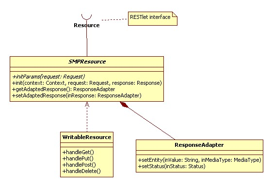

Eureka Streams

Home > Technical Specification > Software architecture > Resource framework Resource frameworkStream plugin framework Notification framework OverviewEureka Streams exposes certain information through REST Resources. The REST resources support gadgets as well as the UI when calls cannot be made through GWT’s RPC mechanism. Eureka Streams uses the RESTlet framework for creating REST resources. RESTlet provides a way to wire up implementations for REST endpoints within Spring along with configuration of the resource url’s. REST Resource ImplementationThe RESTlet implementation for Eureka Streams is described in the following component diagram. Eureka Streams RESTlet Resource implementations provide the adaptation between RESTlet requests and the Eureka Streams Action Framework.
In support of the RESTlet Resource implementations for Eureka Streams a few classes were created to facilitate the adaptation between RESTlet requests and Eureka Streams Action Framework.  SMPResourceThis class provides general operations for all RESTlet implementations. Responsibilities:
WriteableResourceThis class extends SMPResource to provide transactional wrappers around the four REST methods: Get, Put, Post, and Delete. ResponseAdapterWrapper for the Response objects that allows the SMPResource object to be tested. | PAGE CONTENTSVersion 0.9 Documentation is also available for all of the following versions: |